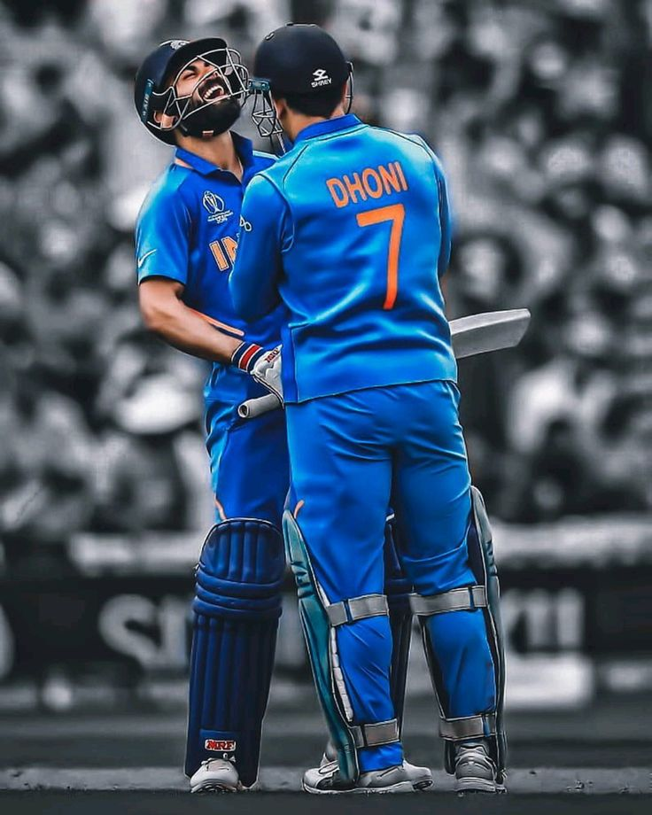

About Virat Kohli
Virat Kohli is widely regarded as one of the greatest ODI batsmen in cricket history. He is known for his consistency, aggressive batting style, and incredible ability to chase targets.
ODI Career Stats
0
Matches
0
Runs
0
Centuries
0
Half Centuries

Contribution to ODI Cricket
- Fastest player to many run milestones in ODI cricket.
- Known as one of the greatest run chasers.
- Key player in India's 2011 World Cup victory.
- Held record for most ODI centuries.
ODI Centuries
| No | Score | Opponent |
|---|---|---|
| 1 | 107 | Sri Lanka |
| 2 | 102* | Bangladesh |
| 3 | 118 | Australia |
| 4 | 105 | New Zealand |
| 5 | 112 | England |
| 6 | 117 | West Indies |
| 7 | 115 | Australia |
| 8 | 123 | Sri Lanka |
| 9 | 100* | Pakistan |
| 10 | 103 | South Africa |
| 11 | 106 | West Indies |
| 12 | 102 | Australia |
| 13 | 115 | Zimbabwe |
| 14 | 123 | New Zealand |
| 15 | 127 | Bangladesh |
| 16 | 112 | Sri Lanka |
| 17 | 131 | Sri Lanka |
| 18 | 122* | England |
| 19 | 117 | Australia |
| 20 | 138 | South Africa |
| 21 | 107 | Pakistan |
| 22 | 154* | New Zealand |
| 23 | 122 | England |
| 24 | 111* | West Indies |
| 25 | 160* | South Africa |
| 26 | 104 | Australia |
| 27 | 134 | England |
| 28 | 111 | New Zealand |
| 29 | 140 | West Indies |
| 30 | 157* | West Indies |
| 31 | 110* | Sri Lanka |
| 32 | 121 | West Indies |
| 33 | 107 | Pakistan |
| 34 | 113 | Australia |
| 35 | 148 | West Indies |
| 36 | 139 | Australia |
| 37 | 123 | New Zealand |
| 38 | 114 | West Indies |
| 39 | 122* | Pakistan |
| 40 | 103 | Bangladesh |
| 41 | 107 | Sri Lanka |
| 42 | 113 | West Indies |
| 43 | 160* | South Africa |
| 44 | 123 | Australia |
| 45 | 111* | Sri Lanka |
| 46 | 122 | Pakistan |
| 47 | 101* | Bangladesh |
| 48 | 117 | New Zealand |
| 49 | 113 | Bangladesh |
| 50 | 117 | New Zealand |
Awards
Click a button to see award details.